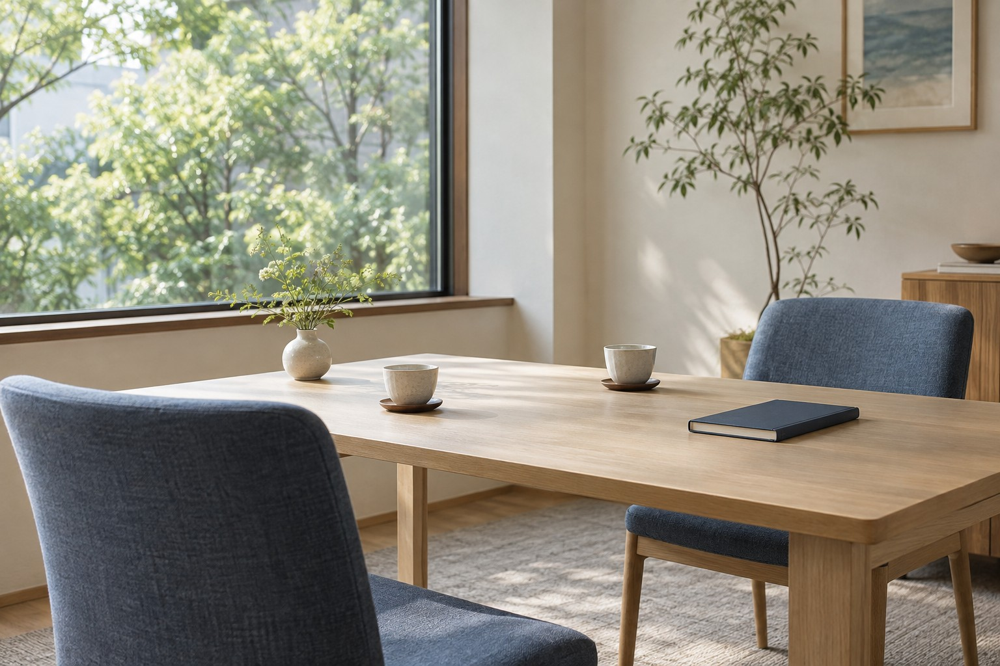
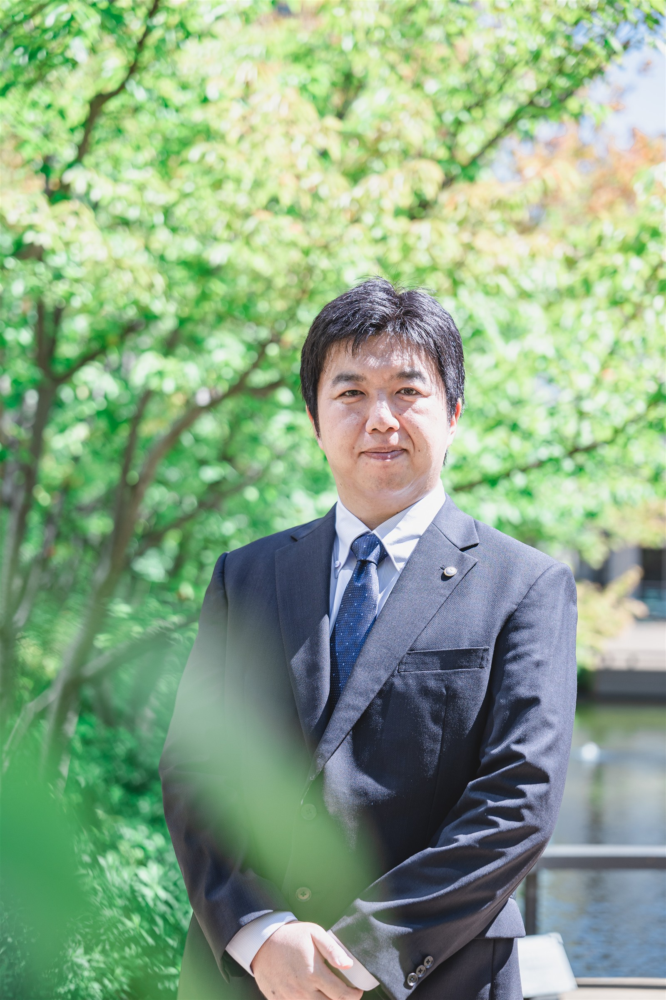
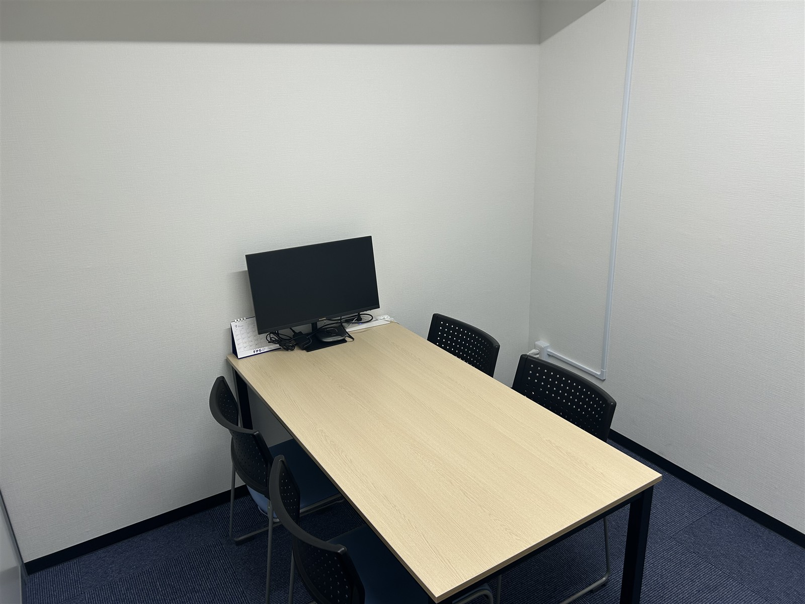
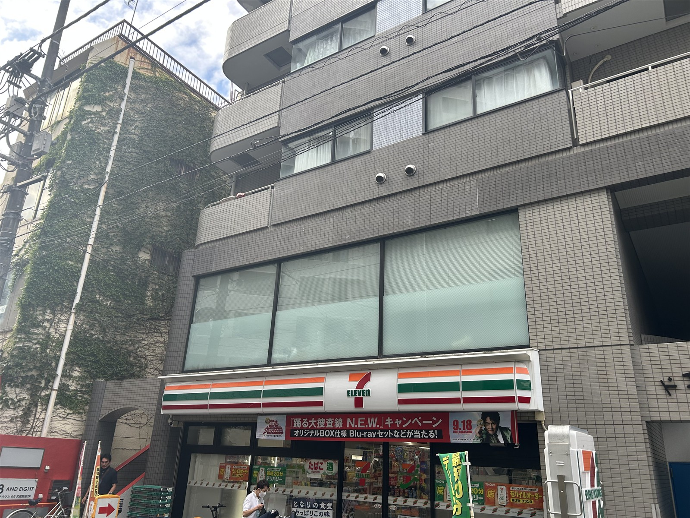

01 / CORPORATE TAX税務顧問・決算申告
継続して相談できる税理士をお探しの法人へ
法人の税務相談から決算・申告まで。事業の背景や日々の経理を理解したうえで、継続的にサポートします。
練馬区・武蔵関 ／ オンライン全国対応
法人の税務顧問から、創業時の経理づくりまで。
ご相談したい内容から、当サービスをご覧ください。
Services
法人の継続的な税務支援を中心に、経理、創業、個人の税務まで。ご相談の内容に合わせて対応範囲をご案内します。
掲載写真は仮のAIイメージです。実際の事務所・備品ではありません。

01 / CORPORATE TAX継続して相談できる税理士をお探しの法人へ
法人の税務相談から決算・申告まで。事業の背景や日々の経理を理解したうえで、継続的にサポートします。
記帳や経理業務の負担を見直したい方へ
日々の記帳や経理業務、クラウド会計の導入について。現在の運用を伺い、必要な支援を一緒に整理します。
開業・法人設立を準備している方へ
これから開業する方、法人設立を考える方へ。事業のスタートに伴う税務・経理についてご相談いただけます。
確定申告を相談したい個人事業主の方へ
個人事業主の方などの確定申告に対応します。申告の内容や資料のご準備状況をお知らせください。
相続・贈与に伴う税務を相談したい方へ
相続・贈与に関する税務のご相談を承ります。ご事情を伺い、必要な対応をご案内します。
どのサービスに当てはまるか分からない場合も、
現在のお困りごとをお知らせください。
Fees & consultation
標準料金だけでなく、対応する業務の範囲や、追加費用が発生する条件も分かる料金案内を目指しています。
サービスごとの料金の目安
基本料金で対応する内容
標準料金が適用されない条件
確認用：標準料金・含まれるサービス・別途料金や個別見積となる条件を分けて掲載します。具体的な金額と条件は料金表の受領後に反映します。
Getting started
フォームから、ご相談内容や事業の状況をお知らせください。
ご相談の目的や必要な支援を確認します。オンラインにも対応しています。
対応する業務と料金をご案内し、ご依頼の内容をすり合わせます。
内容にご納得いただいたうえで、業務を進めてまいります。
確認用：上記の受付・契約手順は原稿案です。実際の運用に合わせて調整します。
Our approach
申告のための数字だけでなく、日々の経理にも目を向ける。これまでの法人顧問と経理業務支援の経験を、皆さまの事業に生かします。
中小企業から上場子会社まで、幅広い法人税務に携わってきました。事業の状況を伺いながら、税務顧問・決算申告を支援します。
スタートアップや法人設立を考える方へ。クラウド会計などを活用し、日々の業務に合った経理システムの導入をお手伝いします。
練馬区を中心に、遠方の方からのご相談にも対応。リモート会議ツールを使い、場所を問わずお話しできる体制を整えています。

Your tax accountant
2008年に横浜国立大学を卒業後、会計事務所に入社。2017年に税理士登録し、都内の税理士法人で年間約50件の法人顧問を担当してきました。
中小企業から上場子会社までの税務に加え、経理業務の支援も経験。2026年、練馬区武蔵関にて小賀坂直行税理士事務所を開業しました。
法人顧問の経験と、バックオフィス全体を見る視点を生かし、皆さまの事業を支えます。
Questions
はい。練馬区を中心に、オンラインで全国のご相談に対応しています。
創業・法人設立を予定されている方も、ご相談いただけます。現在の準備状況をお知らせください。
無料相談は顧問契約に関するご相談が対象です。顧問契約以外の込み入った税務相談は、有償で承る予定です。
はい。クラウド会計などを利用した経理システムの導入支援に対応しています。現在の経理の進め方と、ご希望をお聞かせください。
News
事務所からのご案内を、必要に応じてお届けします。
確認用：初回記事のタイトル案です。本文・掲載日は確認後に設定します。
Office
遠方の方はオンラインでもご相談いただけます。

実際の会議室です。オンラインでのご相談にも対応しています。

東京都練馬区関町北2-29-14
建物の外観をご来訪時の目印に。
Contact
税務顧問をお探しの方、創業の準備を進めている方。
ご相談の内容をフォームからお知らせください。
顧問契約に関するご相談は無料で承る予定です。
その他の税務相談は、内容に応じて有償となります。
受付時間 平日 9:00–18:00